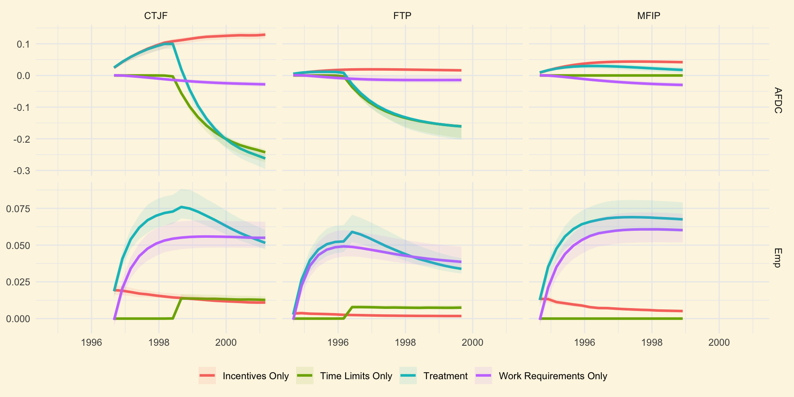

What’s next for the economics of child development?
Intro
- You invited me for a keynote and it went to my head immediately
- I want to do something extremely pretentious: set an agenda for this field
- Try to convince you that:
- we’ve made good progress; and
- that there is much more exciting work to do (especially in Macro)
- Full disclosure: this is coming from someone who spends 90% of his time screaming at a computer
A Research Program that Stands on Two Facts
The evidence suggests several key windows of opportunity in which to make equitable and efficient investments in human capital
Outline:
- Review the evidence
- Becker and Tomes (1979): an easily extendable prototype model
- Applications of the framework
- Where to next?
Evidence on the childhood origins of inequality
Summary
Four categories
- Experimental evidence on primates and other mammals (too large, won’t cover)
- Effect of deprivation/nurturing on grey matter, spinal dendritic density, neuroendocrine system, gene expression (Grantham-McGregor et al. 2007)
- Early childhood education (experimental)
- Perry (Heckman et al. 2010), ABC / CARES (García et al. 2020)
- Home visiting programs (experimental)
- e.g. Colombia (Attanasio et al. 2014), Jamaica, (Gertler et al. 2014), India (Andrew et al. 2020)
- Public investments (quasi-experimental)
- Medicaid (Goodman-Bacon 2021), Head Start (Martha J. Bailey, Sun, and Timpe 2021), Food Stamps (Martha J. Bailey et al. 2024), Child Tax Credit (Barr, Eggleston, and Smith 2022), Moving to Opportunity (Chetty and Hendren 2018)
Abecedarian and CARES Program
Source: García et al. (2020)
- high risk kids 0-5
- full-day care
- health and social services
- family support
Head Start
Source: Martha J. Bailey, Sun, and Timpe (2021)
- staggered adoption by counties (1965 - 1980)
- ages 3-5
- \(\approx\) families below FPL
Medicaid
Source: Goodman-Bacon (2021)
Child Tax Credit
Source: Barr, Eggleston, and Smith (2022)
The Becker Framework
The Becker Framework
- Human capital produced with investments
- Consistent with large literature on human development (Cunha and Heckman 2007)
- Quantitatively, \(\theta\) and \(I\) may be substitutes in early life (Cunha, Heckman, and Schennach 2010)
- These periods of developmental sensitivity are windows of opportunity for public investment
- Bypass equity-efficiency tradeoffs that appear later life (Cunha and Heckman 2007)
The Model
- Generations indexed by \(t\)
- Endowments, \(y\), a function of skills, \(\theta\)
- Investment, \(I\)
- A one period bond, \(A\)
- The technology: \(\theta_{t+1} = f(\theta_{t},I_{t})\)
Recursive formulation: \[ V(A,\theta) = \max_{I,C,A}\left\{u(C) + \beta V(A',\theta') \right\} \] s.t. \[ C + pI + A' \leq y(\theta) + A(1+r) \] \[ A' \geq 0 \]
Note:
- \(C\) and \(I\) can be composite goods e.g. time and money (Del Boca, Flinn, and Wiswall 2014)
- Can extend to multiple skills, periods of investment, inputs
Application: Incomplete Markets
- If \(A'\geq0\) not a constraint, returns on \(I\) and \(A\) are equal
- \(f_{2}(\theta, I) = (1+r)\) \(\Rightarrow\) no role for endowments
- Market incompleteness is therefore key for understanding data and providing a role for policy
- Uninsured income risk also distorts timing of investments
- Quantitatively, binding constraints in any period matter for all periods (Caucutt and Lochner 2020)
- Age-dependent transfers that resolve these inefficiencies \(\approx\) 5% cev (Abbott 2022)
Application: Designing Cash Transfers (Mullins 2022)
Consider a non-linear tax problem a la Diamond (1980):
- A planner choosing income \(y(e)\) for all earnings \(e\)
- Households of type \(e\) choosing \(\{0,e\}\)
A marginal increase in \(y(e)\)…
Classic public finance \[\text{direct:}\ \mu(e)P(e)u_{c}({y}(e)) - {{\lambda}}\]
\[\text{behavioral:}\ + {\lambda}\frac{\partial P(e)}{\partial{y}(e)}\left(e - {y}(e) + {y}(0)\right)\]
New Channel \[ +\ \lambda\times{\text{Marginal effect of income on skills}} \] \[ +\ {\lambda}\frac{\partial P(e)}{\partial{y}(e)}\times{\text{Net effect of employment on skills}}\]
Application: Designing Cash Transfers (Mullins 2022)
- To quantify the mechanism, estimate a dynamic model of work, program participation and investment in children
- Factor shares of time and money inputs play crucial and intuitive role in planner’s problem
- \(\delta_{x}\ \uparrow\) program more generous
- \(\delta_{\tau}/\delta_{x}\ \uparrow\) higher tax on earnings
- Estimate the model on single mothers with rich unobserved heterogeneity in labor market productivity, work costs, and program participation costs.
- Use welfare reform and EITC expansions to form instruments for \(\delta_{x}\) and \(\delta_{\tau}\)
- An optimal program is 20-25% more generous than US baseline in 2000
Application: Designing Cash Transfers (Mullins 2022)
Application: Direct Public Investment
Source: García et al. (2020)
Application: Direct Public Investment
- Daruich (2023) models this intervention as a direct monetary investment equal to the cost of the program
- using Cunha, Heckman, and Schennach (2010) estimates
- this seems to work remarkably well (gets close to the treatment impact on earnings)
- even seems to match the impact on “scaled up” programs (Head Start)
- large welfare gains: 12% cev in long-run
- a key source: dynamic complementarity across generations
- evidence is more scant on some of the major components of the mechanism
Application: Neighborhoods

Other Applications
- Childcare
- Marital Law
- Brown, Flinn, and Mullins (2024) study the effects of family law on fertility, divorce, and cognitive skill outcomes
- unilateral vs mutual consent, child support, child custody
- complicated dynamic interplay between policies
Skills and Divorce
- differences in skill outcomes driven partly by selection, partly by inputs (off-setting)
- effect of policy change on divorce does not predict effect on skills
- differences in selection
What’s Next?
Looking ahead
- Credibility
- Widening scope
- Inputs and Outputs
- Mechanism behind returns
Credibility: An example
Suppose that a key piece of the model is:
\[ \theta_{t+1} = z [\alpha I^\rho + (1-\alpha)\theta_{t}^\rho]^{1/\rho} \]
with \(I = x^{\delta}\tau^{1-\delta}\).
A common strategy in Macro:
- Calibrate model to cross-sectional moments
- e.g. Match average test scores by age of child and by parental income, average expenditures on children (CEX), average time inputs (ATUS)
- identificiation via CRS assumption + functional form
- assuming away confounding sources of heterogeneity (e.g. correlation between wages/preferences and \(z\))
- Validate the model by replicating a known research design inside the model…
Credibility
- example: “Person, Guy & Fellah (2014) find that a 10% increase in income for population \(X\) leads to a 5% increase in test scores. We simulate a 10% income increase in income and find that it results in a 6% increase in test scores, which validates a key quantitative mechanism in our model.”
- I wrote this slide because I wanted to complain about this practice, but I came around as I wrote it down…
- The good:
- This type of validation exercise has become the norm
- It adds credibility while keeping the model accountable to first order features of the data
Credibility
The bad:
- How close is good enough? Is 5% vs 6% big or small? It depends on the calculation.
- Delta method: \(\text{sd}(g(\beta)) = |g\prime(\beta)|\text{sd}(\beta)\)
- \(\text{sd}(\beta)\) increasingly common in Macro but \(\text{sd}(g(\beta))\) still rare
- How much uncertainty does this uncertain number add to your calculation?
- Often, little to no discipline on mechanisms that really matter (Brown, Flinn, and Mullins 2024)
- note that this function has much more empirical content to it than just the validation
- Subject to cherry-picking
- Treats evidence as an afterthought, rather than a key piece of the exercise
- Why not hold models accountable to as much evidence as possible in a more rigorous way?
Example: Mullins (2022)
Model produces a linear outcome equation:
\[ \log(\theta_{i,t+1}) = \mu_{k(i)} + \delta_{x}\log\left(\text{net income}_{i,t}\right) + \delta_{\tau}\log\left(\text{non-market time}_{i,t}\right) + \varepsilon_{i,t} \]
Two strategies:
- Uses policy variation across states and over time to form instruments
- Use panel data to invert out type \(k(i)\) and control directly for sources of endogeneity
- Estimate both with GMM and compare
Example: Mullins (2024)
- Build on the dynamic model of Mullins (2022)
- Use it to aggregate evidence from 3 welfare reform experiments across 6 sites
- Experimental welfare programs differed in their use of
- benefit formulae;
- time limits;
- work requirements;
- childcare subsidies
- Experimental variation identifies key parameters
- Use model to make sense of differences in treatment effects on child outcomes, work, and welfare participation
- Call this a structural meta-analysis.
Model predicts out of sample
Model can decompose treatment effects
Well-articulated variation
- Say that a source of variation is well-articulated inside the model if it can be replicated in an a priori known way
- Best example: known changes to prices or endowments in the model
- Benefit formulae, childcare subsidies, and time limits are all well-articulated
- Work requirements are not (must be parameterized and estimated)
- Any model can be held accountable to empirical evidence that is well-articulated
- A structural meta-analysis begins by identifying all sources of evidence that are well-articulated inside the model
- Models are well-suited to the task of rigorously aggregating evidence!
Early Childhood Programs
- The most promising interventions are hard to articulate inside a standard model
- What is quality? How do parenting interventions work?
- Face well-known scaling and fadeout issues
- Begging for new models and new attempts to understand (Daruich 2023)
Reviewing inputs and outputs
| Paper | Inputs | Outputs |
|---|---|---|
| Caucutt and Lochner (2020) | Money | Cog. |
| Abbott (2022) | Money & Time | Cog. |
| Del Boca, Flinn, and Wiswall (2014) | Money & Time | Cog. |
| Daruich (2023) | Money & Time | Cog. and “Non-Cog” |
| Mullins (2022) | Money & Time | Cog. and Behavioral |
| Moschini (2023) | Time & Childcare | Cog. |
| Caucutt et al. (2024) | Money, Time & Childcare | Cog. |
| Zheng and Graham (2022) | Money & School Quality | Income |
Reviewing inputs and outputs
- Model-based work has focused on:
- mainly cognitive and limited non-cognitive skills
- Long-run focus on income only
- Skills matter for much more than the labor market…
- Physical and mental health
- Crime
- Pro-social attitudes and behaviors
- Creativity and invention
- We severely underestimate the returns to intervention when we focus on the labor market returns
Expanding Inputs (Caucutt et al. 2024)
- We extend the basic framework to allow for (1) time; (2) money; and (3) childcare
- Key difference with Cunha, Heckman, and Schennach (2010): investments with measurable prices, known relationship to endowments
- Use input demand to estimate elasticities of substitution
- Find a key role for these elasticities in predicting the effect of price changes (e.g. childcare subsidies)
The many dimensions of intelligence
Source: Grantham-McGregor et al. (2007)
The many dimensions of intelligence
Researchers have identified many unique dimensions of intelligence through measurement and imaging (Sternberg 2019):
- Crystallized vs fluid
- Working memory and processing speed
- Executive functioning: inhibition, task-switching, updating
- Socio-emotional: systems for processing social information and emotional signals
- Domain-specific: language, spatial processing, numerical computation
The 5 dimensions of personality
- Conscientiousness
- Emotional Stability
- Openness
- Agreeableness
- Extraversion
Personality and the Life-cycle
Source Todd and Zhang (2020), estimated on HILDA data
Personality presents new opportunities and new challenges
- The returns to personality are unlikely to be fundamentally technological
- Shaped by social norms and organization of production
- extreme example: language
- Important to understand the mechanisms behind and identify policy invariant relationships
- e.g. multiple equilibria in the organization of production
Toward a better understanding of returns
- Quantitative policy studies focus on labor market earnings
- straightforward only in competitive markets
- not policy invariant
- taxes
- industrial composition
- task assignment
- organization of production
- technology adoption
- Empirical work emphasises health, crime, happiness
- also not policy invariant!
- mass incarceration
- public health care
Conclusions
- Useful evidence for policy is rapidly accumulating
- The Becker and Tomes (1979) model has taken us pretty far
- And can take us a lot further (has not caught up to the evidence)
- We should be working to aggregate evidence in a rigorous way
- Develop theories in order to articulate the evidence
- And broaden scope for understanding the dimensions of and returns to human capital
References
Abbott, Brant. 2022. “Incomplete Markets and Parental Investments in Children.” Review of Economic Dynamics 44 (April): 104–24. https://doi.org/10.1016/j.red.2021.02.012.
Andrew, Alison, Orazio Attanasio, Britta Augsburg, Monimalika Day, Sally Grantham‐McGregor, Costas Meghir, Fardina Mehrin, Smriti Pahwa, and Marta Rubio‐Codina. 2020. “Effects of a Scalable Home‐visiting Intervention on Child Development in Slums of Urban India: Evidence from a Randomised Controlled Trial.” Journal of Child Psychology and Psychiatry 61 (6): 644–52. https://doi.org/10.1111/jcpp.13171.
Attanasio, Orazio P., Camila Fernández, Emla O. A. Fitzsimons, Sally M. Grantham-McGregor, Costas Meghir, and Marta Rubio-Codina. 2014. “Using the Infrastructure of a Conditional Cash Transfer Program to Deliver a Scalable Integrated Early Child Development Program in Colombia: Cluster Randomized Controlled Trial.” BMJ 349 (September): g5785. https://doi.org/10.1136/bmj.g5785.
Bailey, Martha J, Hilary Hoynes, Maya Rossin-Slater, and Reed Walker. 2024. “Is the Social Safety Net a Long-Term Investment? Large-Scale Evidence From the Food Stamps Program.” Review of Economic Studies 91 (3): 1291–1330. https://doi.org/10.1093/restud/rdad063.
Bailey, Martha J., Shuqiao Sun, and Brenden Timpe. 2021. “Prep School for Poor Kids: The Long-Run Impacts of Head Start on Human Capital and Economic Self-Sufficiency.” American Economic Review 111 (12): 3963–4001. https://doi.org/10.1257/aer.20181801.
Barr, Andrew, Jonathan Eggleston, and Alexander A Smith. 2022. “Investing in Infants: The Lasting Effects of Cash Transfers to New Families.” The Quarterly Journal of Economics 137 (4): 2539–83. https://doi.org/10.1093/qje/qjac023.
Becker, Gary S., ed. 2010. A Treatise on the Family. Enl. ed. Cambridge, Mass: Harvard University Press.
Becker, Gary S., and Nigel Tomes. 1979. “An Equilibrium Theory of the Distribution of Income and Intergenerational Mobility.” Journal of Political Economy 87 (6): 1153–89. https://www.jstor.org/stable/1833328.
Brown, Meta, Christopher Flinn, and Joseph Mullins. 2024. “Family Law Effects on Divorce, Fertility, and Child Investment.” Journal of Labor Economics Forthcoming.
Caucutt, Elizabeth, and Lance Lochner. 2020. “Early and Late Human Capital Investments, Borrowing Constraints, and the Family.” Journal of Political Economy 128 (3): 1065–1147. https://doi.org/10.1086/704759.
Caucutt, Elizabeth, Lance Lochner, Joseph Mullins, and Youngmin Park. 2024. “Child Skill Production: Accounting for Parental and Market-Based Time and Goods Investments.” Working Paper.
Chetty, Raj, and Nathaniel Hendren. 2018. “The Impacts of Neighborhoods on Intergenerational Mobility I: Childhood Exposure Effects*.” The Quarterly Journal of Economics 133 (3): 1107–62. https://doi.org/10.1093/qje/qjy007.
Chyn, Eric, and Diego Daruich. 2022. “An Equilibrium Analysis of the Effects of Neighborhood-Based Interventions on Children.” National Bureau of Economic Research. https://www.nber.org/papers/w29927.
Cunha, Flavio, and James Heckman. 2007. “The Technology of Skill Formation.” American Economic Review 97 (2): 31–47. https://doi.org/10.1257/aer.97.2.31.
Cunha, Flavio, James J Heckman, and Susanne Schennach. 2010. “Estimating the Technology of Cognitive and Noncognitive Skill Formation.” Econometrica 78 (3): 883–931. https://doi.org/10.3982/ECTA6551.
Daruich, Diego. 2023. “The Macroeconomic Consequences of Early Childhood Development Policies.” Working Paper, no. 2018-29. https://papers.ssrn.com/sol3/papers.cfm?abstract_id=3265081.
Del Boca, Daniela, Christopher Flinn, and Matthew Wiswall. 2014. “Household Choices and Child Development.” The Review of Economic Studies 81 (1): 137–85. https://doi.org/10.1093/restud/rdt026.
Diamond, P. 1980. “Income Taxation with Fixed Hours of Work.” Journal of Public Economics 13 (1): 101–10. https://doi.org/10.1016/0047-2727(80)90024-9.
Duncan, Greg J, and Katherine Magnuson. 2013. “Investing in Preschool Programs.” Journal of Economic Perspectives 27 (2): 109–32. https://doi.org/10.1257/jep.27.2.109.
Flinn, Christopher J., Petra Todd, and Weilong Zhang. 2024. “Labor Market Returns to Personality: A Job Search Approach to Understanding Gender Gaps.” Journal of Political Economy, November, 734092. https://doi.org/10.1086/734092.
Fogli, Alessandra, and Veronica Guerrieri. 2019. “The End of the American Dream? Inequality and Segregation in US Cities.” w26143. Cambridge, MA: National Bureau of Economic Research. https://doi.org/10.3386/w26143.
García, Jorge Luis, James J. Heckman, Duncan Ermini Leaf, and María José Prados. 2020. “Quantifying the Life-Cycle Benefits of an Influential Early-Childhood Program.” Journal of Political Economy 128 (7): 2502–41. https://doi.org/10.1086/705718.
Garcia-Vazquez, Martin. 2024. “The Equilibrium Effects of State-Mandated Minimum Staff-to-Child Ratios.” Working Paper.
Gertler, Paul, James Heckman, Rodrigo Pinto, Arianna Zanolini, Christel Vermeersch, Susan Walker, Susan M. Chang, and Sally Grantham-McGregor. 2014. “Labor Market Returns to an Early Childhood Stimulation Intervention in Jamaica.” Science 344 (6187): 998–1001. https://doi.org/10.1126/science.1251178.
Gilraine, Michael, and Nolan Pope. 2021. “Making Teaching Last: Long-Run Value-Added.” w29555. Cambridge, MA: National Bureau of Economic Research. https://doi.org/10.3386/w29555.
Goodman-Bacon, Andrew. 2021. “The Long-Run Effects of Childhood Insurance Coverage: Medicaid Implementation, Adult Health, and Labor Market Outcomes.” American Economic Review 111 (8): 2550–93. https://doi.org/10.1257/aer.20171671.
Grantham-McGregor, Sally, Yin Bun Cheung, Santiago Cueto, Paul Glewwe, Linda Richter, and Barbara Strupp. 2007. “Developmental Potential in the First 5 Years for Children in Developing Countries.” The Lancet 369 (9555): 60–70. https://doi.org/10.1016/S0140-6736(07)60032-4.
Heckman, James J., Seong Hyeok Moon, Rodrigo Pinto, Peter A. Savelyev, and Adam Yavitz. 2010. “The Rate of Return to the HighScope Perry Preschool Program.” Journal of Public Economics 94 (1-2): 114–28. https://doi.org/10.1016/j.jpubeco.2009.11.001.
Huggett, Mark, Gustavo Ventura, and Amir Yaron. 2011. “Sources of Lifetime Inequality.” American Economic Review 101 (7): 2923–54. https://doi.org/10.1257/aer.101.7.2923.
Keane, Michael P., and Kenneth I. Wolpin. 1997. “The Career Decisions of Young Men.” Journal of Political Economy 105 (3): 473–522. https://doi.org/10.1086/262080.
Kline, Patrick, and Christopher R. Walters. 2016. “Evaluating Public Programs with Close Substitutes: The Case of HeadStart*.” The Quarterly Journal of Economics 131 (4): 1795–1848. https://doi.org/10.1093/qje/qjw027.
Lavy, Victor, and Rigissa Megalokonomou. 2024. “Alternative Measures of Teachers’ Value Added and Impact on Short and Long-Term Outcomes: Evidence From Random Assignment.” w32671. Cambridge, MA: National Bureau of Economic Research. https://doi.org/10.3386/w32671.
List, John, and Haruka Uchida. 2024. “Here Today, Gone Tomorrow? Toward an Understanding of Fade-Out in Early Childhood Education Programs.” w33027. Cambridge, MA: National Bureau of Economic Research. https://doi.org/10.3386/w33027.
Moschini, Emily G. 2023. “Childcare Subsidies and Child Skill Accumulation in One-and Two-Parent Families.” American Economic Journal: Macroeconomics 15 (1): 475–516. https://www.aeaweb.org/articles?id=10.1257/mac.20200282.
Mullins, Joseph. 2022. “Designing Cash Transfers in the Presence of Children’s Human Capital Formation.” Working Paper.
———. 2024. “A Structural Meta-Analysis of Welfare Reform Experiments and Their Impact on Children.” Journal of Political Economy Forthcoming.
Sternberg, Robert J., ed. 2019. The Cambridge Handbook of Intelligence. 2nd ed. Cambridge University Press. https://doi.org/10.1017/9781108770422.
Todd, Petra E., and Weilong Zhang. 2020. “A Dynamic Model of Personality, Schooling, and Occupational Choice.” Quantitative Economics 11 (1): 231–75. https://doi.org/10.3982/QE890.
Zheng, Angela, and James Graham. 2022. “Public Education Inequality and Intergenerational Mobility.” American Economic Journal: Macroeconomics 14 (3): 250–82. https://doi.org/10.1257/mac.20180466.